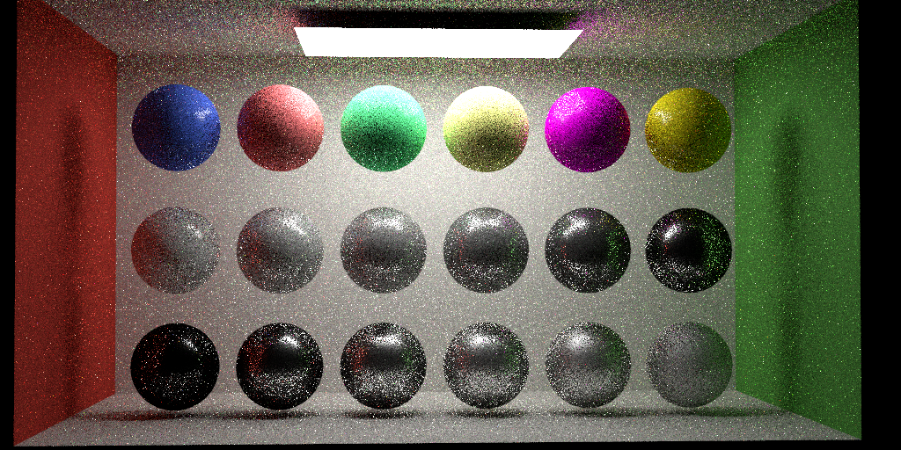
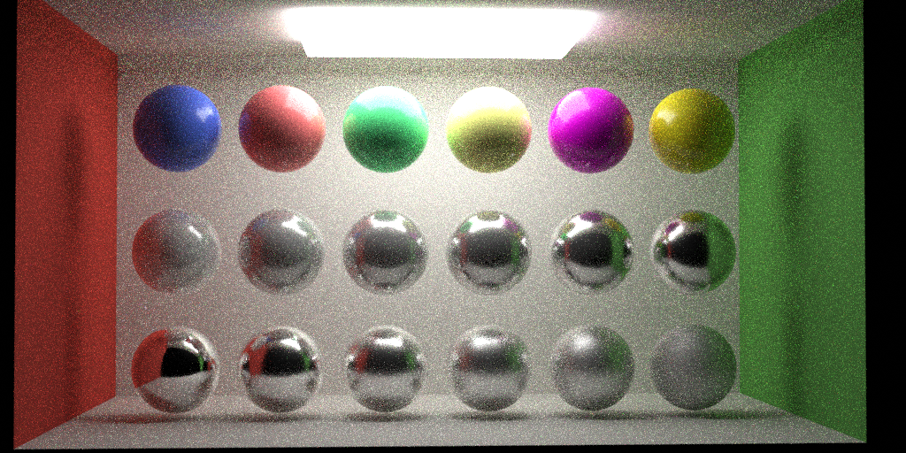

(#) 1. Introduction
(##) 1.1Motivational image


Regarding the theme "Coloring outside the lines," we want to depict a scene through an unconventional color rendering method. Taking the inspiration from reality, based on the message of lines, I associated it with candles - usually in the form of long white cylinders, which is tedious. To add an extensive color pattern, we did not intend to change the candlelight's color but concentrated our work on the candle material. Because we're obsessed with the artistic phenomenon of wax melting, especially when the different colors of the candles melt and mix, they can come together to create a colorful image. That's the scene we want to realize — exquisite and sumptuous coloring flowing out of white cylinders.
(##) 1.2 Proposed features
- Environment Lighting
- Blackbody Radiation
- Parallel Rendering
- Standard PBR material
- Quasi-Monte Carlo Sampler (Halton Sampler)
- Anisotropic Microfacet BRDF
- Volumetric Path Tracing, Participating Media (Homogeneous and Heterogeneous)
- Postprocessing Pipeline (Image Denoising, Tonemapping, Color Correction, Vignetting etc.)
(##) 1.3 Division of labor/collaboration plan
- **Week 0** (~ Oct 30):
- Darts refactoring (@Zihong Zhou )
- Scene sketch up (@Yunquan Gu )
- **Week 1** (Oct 31~ Nov 6):
- Implement Volumetric Path Tracing and Participating Media (@Zihong Zhou)
- Implement Parallelism(@Zihong Zhou)
- **Week 2** (Nov 7~Nov 13):
- Environment Lighting(@Yunquan Gu)
- Blackbody Radiation (@Yunquan Gu)
- Microfacet BRDF(@Zihong Zhou)
- Quasi-Monte Carlo Sampler(@Yunquan Gu)
- **Week 3** (Nov 14~Nov 20):
- Exploring stretch goals
- Presentation & Report
(#) 2. Anistropic microfacet BRDF (4 pt)
(##) 2.1 Technical Details
We implemented a microfacet-based BRDF model (anisotropic GGX) in darts.
Specifically, we implemented a RoughConductor material using this BRDF. We also implemented a popular PBR material based on this and we choose to support metallic-roughness workflow.
(##) 2.2 Validation/Rendering
(###) 2.2.1 RoughConductor material validation against PBRT-v3
All spheres are isotropic roughness (roughness from left to right: 0.1,0.2,0.3,0.4,0.5,0.7). Note that we do not use roughness remapping here (setting remaproughness to false when rendering pbrt's image):
Note that there are subtle differences in sphere edges for high roughness (especially for roughness=0.7) which might be due to the Fresnel reflection (and/or masking-shadowing function). Our fresnel computation is from mitsuba-0.5 `fresnelConductorExact()`[1] while pbrt-v3 follows [2].
Our masking-shadowing based on simple uncorrelated height assumption where $G(wo,wi)=G_1(wo)G_1(wi)$ instead of the more accurate height correlated model.
**RoughConductor material validation against Cycles:**
We also validate our result with Blender's Cycles renderer. The previous subtle light ring differences for high roughness sphere in pbrt-v3 renderings does not show up in Cycles. Our rendering matches a bit closer to the Cycles.
Note that the brightness differences are due to the fact that Cycles uses two-sided shader so the arealight emits in both directions. We disable the default Cycles color management (**by changing to sRGB and using raw view transform, gamma = 2.2**) to perform a fair comparison. Cycles uses roughness remapping for glossy BSDF (alpha = roughness^2) so we take a square root of roughness before rendering in Cycles (since ours and pbrt-v3 disable roughness remapping).
**Anisotropic RoughConductor material validation against PBRT-v3:**
Here we validate our anisotropic roughness results with pbrt-v3. Roughness remapping is disabled.
From left to right: roughnessU/V are 0.6/0.05,0.05/0.6,0.1/0.03,0.03/0.1,0.05/0.2,0.2/0.05.
**Code coordinates: `include/darts/microfacet.h`, `darts/materials/roughconductor.cpp`**
(#) 3. Metallic-roughness standard PBR material
(##) 3.1 PBR material validation/showcase
Based on RoughConductor material, we extended it to support one of the popular PBR materials with metallic-roughness workflow. Since there are lots of versions for this kind of materials (PBR materials, principled BSDF, Disney BRDF/BSDF, etc.) and there are lots of variations/choices in deciding how to select each BRDF/BTDF lobe and how to combine them together (along with energy conservation and normalization factors considerations), we only show our result here. But our several renderings shown here should give you some sense of correctness.
Technical Details:
(Image from https://registry.khronos.org/glTF/specs/2.0/glTF-2.0.html#implementation.)
Evaluating this BRDF is straightforward and we just evaluate each BRDF lobe and mix them together according to weights.
There are different ways to sample this BSDF, one of which is to simply cosine weighted sample over hemisphere and evaluate all the terms.
But that would be inefficient, since we want to account for both the metallic term for dielectric and conductor lobes mixing as well as the fresnel term for diffuse lobe and the specular Torrance-Sparrow BRDF in dielectric lobe.
This is similar to what we have done for `BlendMaterial`:
```
if xi_1 < metallic:
sample conductor => fs
return fs / metallic
else:
sample microfacet normal => m
compute dielectric fresnel => f_diel
if xi_2 < f_diel:
sample dielectric specular term => fs
return fs / (f_diel * (1.0 - metallic))
else
sample diffuse term => fs
return fs / ((1.0 - f_diel) * (1.0 - metallic))
```
In practice we could reuse xi_1 to for xi_2 usage and metallic/f_diel terms would cancel out since we are doing importance sampling.
Please refer to `StandardPBR::eval(), StandardPBR::pdf(), StandardPBR::sample()` for details.
Here we compare naive sampling with our importance sampling:

(###) Validation: RoughConductor vs Standard PBR with metallic = 1.0
This is a test performed to verify one of the correctness: if we use our standard PBR material with metallic = 1.0, the appearance should match RoughConductor with the same roughnes/alpha. There are differences in fresnel (RoughConductor using exact fresnel computation while standard PBR uses Schlick approximation) so the brightness could differ a bit.
We have a flag in RoughConductor `forcePerfectReflection` to use Fr = 1.0 so that it should match the standard-pbr's result (with base color = (1,1,1))
(###) Validation: Ours vs Cycles
We validate our Standard PBR with Cycles' Principle BSDF. Note that we only implemented the metallic-roughness workflow (conforming gltf's specification).
The first row uses metallic = 0.0 (to simulate plastic) and roughness = 0.2 varying base color.
The second row uses roughness = 0.2 and base color = (1,1,1) varying metallic from 0.0 to 1.0.
The last row uses metallic = 1.0 and base color = (1,1,1) varying roughness.
We use kIOR = 1.5 (corresponding f0 = 0.04) for dielectric specular lobe.
This would correspond to specular = 0.5 in Cycles (refering to the original Disney's BRDF paper).
(Brightness differences are due to the fact that Cycles uses two-sided BRDF (for emission), the appearance should largely match but not exactly.)

(###) Feature Specific Rendering
We rerender the interesting scene in assignment 3 using our new standard PBR material:
(#) 4 Volumetric Path Tracing
(##) Technical Details
For this feature, we implemented:
- Volumetric Path Tracing
- With Multiple Importance Sampling
- With Index-Matched Boundary (Null BSDF)
- Homogeneous Participating Media (HenyeyGreestein Phase Function)
- Heterogeneous Participating Media (Nanovdb)
- Density Grid (Stub code provided by darts)
- Temperature Grid and Temperature to Blackbody Radiation for Volumetric Emission
(###) Validation
Volumetric Path Tracing:
We have implemented volumetric path tracing (in recursive style) with multiple importance sampling.
(###) Implementation Details:
We keep a `MediumInterface` for each surface type to specify the medium inside and outside the object.
A `Medium` pointer is also kept in the ray so that we could query whether current ray is inside the medium.
For homogeneous participating media, we randomly select a channel for chromatic scattering/absorption coefficients and sample the distance according to the transmittance.
If we sampled the medium interaction event, we do a multiple importance sampling for direct lighting (and go with multiple scattering afterwards). That is -- sampling the emitter, evaluating the phase function and figuring out the transmittance through the emitter sampled point. And we sample the phase function to get a ray and try another intersection, figuring out the transmittance towards the emitter. Then we could combine these two terms using MIS with balanced heuristic.
If we sampled the surface term, that would boils down to the ordinary path tracing.
We also check if the surface has a null BSDF (marking a boundary for medium).
If it does, continue for the next search.
If not, we just try to do multiple importance sampling again for direct lighting (and go with indirect illumination afterwards).
The difference with the original `path_tracing_mis` is that we need to figure out the transmittance along the way.
For heterogeneous participating media, we start with null scattering framework to account for the null-scattering event in the path tracing.
However, we do not have enough time to read through the paper and figure out how to do multiple importance sampling using null-scattering framework.
So we fallback to the old pbrt approach without modifying the framework. All implementation details will be hidden inside the `nanovdb_medium` implementation -- to sample the transmittance, we perform delta tracking and to evaluate the transmittance (required by next event estimation), we perform ratio tracking.
(###) Absorption Only
Here are images rendered with different absorption coefficients (without scattering).
The homogeneous participating medium is filled inside the CornellBox.
We use max bounces = 10 (accounting for volumetric scattering) without Russian Roulette.
Phase function uses HenyeyGreenstein with g=0 (isotropic).
(###) Absorption + Scattering
Here are images rendered with different scattering coefficients in our implementation.
We use max bounces = 10 (accounting for volumetric scattering) without Russian Roulette.
Phase function uses HenyeyGreenstein with g=0 (isotropic).
(###) Absorption + Scattering with Different g
Here we validate the result of Henyey-Greensteinn phase function. We use sigma_s(0.5,0.5,0.5) and sigma_a(0.1,0.1,0.1) for all results but with different asymmetry parameters for phase function.
Note that for g=0.99 close to 1.0, most light are scattering in the same direction as incident direction so we will get a sense of a "clear day" but there are some nice glowing effect on the area light.
(###) Scattering Only
Here are several renderings with different scattering coefficients (from left to right 0.1/0.2/0.4/0.6/0.8/1.0/2.0/4.0/6.0/8.0/10.0/20.0 R=G=B), absorption coefficients are 0.
We ignore the BSDF at the boundary of the sphere.
(###) Heterogeneous Participating Media
Heterogeneous participating media is supported through Nanovdb.
(###) Validations/Feature Specific Renderings
Here we compare our rendering for this VDB asset with Blender Cycles.
Since we get some artifacts in final rendering for Cycles, we capture an image at Blender viewport.
We do not use Blender Cycles' Volume Scatter and Volume Absorption shader since it could produce voxel like effect (and we do not yet to figure out the solution), we use Principle Volume for rendering.
Phase function is Henyey-Greenstein with g=0, sigma_s = sigma_a = 0.1,0.1,0.1.
(###) Emissive Volume
We also extend the skeleton code in nanovdb_medium.cpp to load temperature grid and uses our blackbody radiation to remap the temperature to color.
We simply add up the emissive term in the volume rendering equation (without direct sampling emissive volumes).
Here is another shot for rendering candle flame.
(##) Issues
1. g=-1 or g=1 will give out NaN values for sampling phase function. Our (temporary) solution is clampping and not getting -1/1 values. Similarly, artifacts could show up for small alpha value in microfacet models so we clamp to 1e-3f.
2. We need to carefully place our mesh to avoid overlapping.
PBRT does not actually solve this problem and sometimes it could still show up this artifact (depending on how we specify MediumInterface).
The cause is that when ray comes into the sphere below the ground plane, the ground plane assumes it has a vaccum medium but the sphere does have some participating medium.
Our solution is to lift up the sphere a bit so all regions would have well-defined medium interface.
3. We found that some vdb resources could contain negative density/temperature data and would lead to failure. Our solution is to clamp them to zero so that it looks the same with Cycles.
(###) Code coordinates: `darts/integrators/path_tracing_vol.cpp`,`darts/medium/nanovdb_medium.cpp`, `darts/phases/hg.cpp`
(#) 5 Quasi-Monte Carlo Sampler
In order to generate images with less noise, we implemented the Halton sequence sampler as the Quasi-Monte Carlo sampler following the pbrt book and [Leonhard Grünschloß](https://gruenschloss.org/).
Here is a comparison between the Halton sampler and the independent sampler rendering jensen box with 256 samples.
We also implemented the faure scrambling to avoid the correlation issue in Halton sequence when the base is large.
**Code coordinates: `src/samplers/halton.h`, `src/samplers/halton.cpp`**
(#) 6 Environment Lighting
We implemented a simple version of environment lighting by extending the `background` function in `scene` class. We assume
there are infinite lights coming from all around, so that the ray which hit nothing will fall into the `background` function
obtain the illumination from an HDR image.
Following are two example of infinite area lights:
**Code coordinates: `src/scene.cpp`**
(#) 7 Parallel Rendering
Our parallelization are based on [OpenMP API](https://www.openmp.org/)(Open Multi-Processing). We gain a great performance enhancement with this tool:
Here is a performance comparison on rendering our final scene.
|Without parallelized | Parallelized
-------|:------:|:----------:
Render |348s | 1383s
[Table [states]: Performance comparison of parallelization rendered on a Mac M1 2020.]
**Code coordinates: `src/scene.cpp`**
(#) 8 Blackbody Radiation
Our implementation of Blackbody emitter are based on [pbrt](https://www.pbr-book.org/3ed-2018/Light_Sources/Light_Emission).
By assigning blackbody emitter objects temperatur, our implementation will first convert temperate to wavelength according to Planck's law.
Next, we will compute XYZ color from wavelength by CIE standard. Eventually, we have the emitter color in RGB color space through a
transformation matrix [M](http://www.brucelindbloom.com/index.html?Eqn_RGB_XYZ_Matrix.html).
Here is an image presenting color of emitter in different colors:
*Spere temperature from left to right correspondingly are 2600, 3000, 4000, 5500, 7500, 12000*
**Code coordinates: `src/blackbody.cpp`, `include/spectrum.h`**
(#) 9 Final Image
Our final image are rendered with 256 samples per pixel and 32 max bounces in VolPt integrator.
- All candle and wax model are sculpted by ourselves.
- Candle and wax texture are created from Blender
- Flame and fog are rendered as volume material
- The wooden board below wax are given PBR material
(#) Acknowledgement
- The wooden board in our scene is modeled by kanistrastudio on [cgtrader](https://www.cgtrader.com/3d-models/architectural/other/wood-plank-debris).
- The floor texture in our scene is downloaded from [poly haven](https://polyhaven.com/textures/wood)
- Candle flame is from [artstation](https://www.artstation.com/marketplace/p/5jLkX/high-res-vdb-candle-flame)